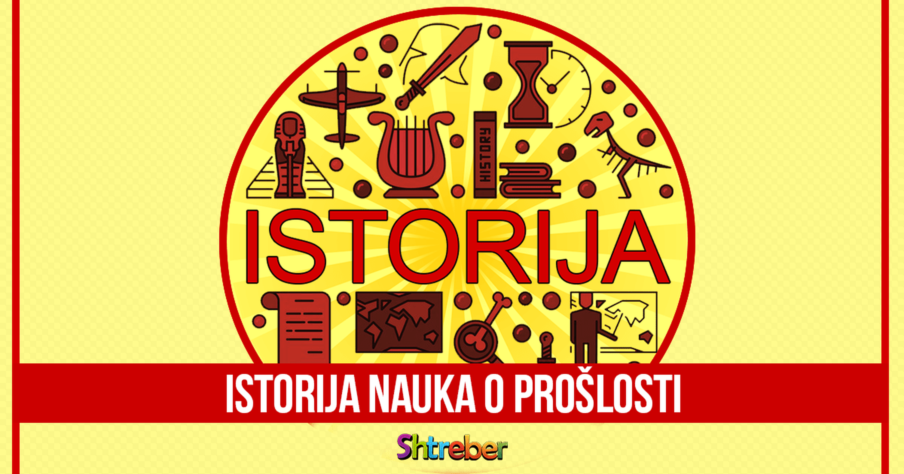
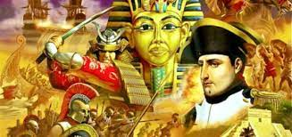

 Историја (од грчке ријечи ἱστορία [istoría] — историа, што значи „истраживање, знање које се стиче истраживањем“)[1] или повијест (екав. повест)[2][3] јесте наука о прошлости, која се нарочито односи на људе.[4][5] То је општи израз који се односи на прошле догађаје, као и на памћење, откривање, скупљање, организовање, представљање и тумачење информација о одређеним догађајима. Научници који се баве историјом се зову историчари. Догађаји који су се догодили прије писане историје сматрају се преисторијом. Etimologija  Појам „историја“ потиче од грчке речи „istoria” што значи испитивање,[13] испитивањем остварено знање, објашњење, описивање, приповедање... За старе Грке је ова реч подразумевала знање стечено испитивањем и слушањем. Грчку реч “istoria“ први пут срећемо код Херодота из Халикарнаса, „оца историје“. Predmet proucavanja Предмет проучавања историје чине догађаји из прошлости који се односе на човека као на друштвено биће. Многи догађаји из прошлости нису предмет проучавања историје (историја Сунчевог система, историја Земљине коре итд). Међутим, то не значи да историјску науку не интересују и природни процеси. Историја проучава и оне природне појаве које су се непосредно одразиле на животе људи (епидемије, потреси, поплаве итд). Предмет проучавања историје јесте човек као друштвено биће. Његова физиолошка и биолошка страна предмет су проучавања других наука. Metod Општа метода историјске науке се дуго, све до почетка 20. века, изграђивала на темељима политичке историје и практично је била специјална методологија политичке историје. Први део методологије односи се на проналажење и познавање историјских извора. Изворна грађа је основа за историјску реконструкцију. Овај део историјске методологије назива се хеуристика.[20] Број историјских за одређени догађај обично ће зависити од тога у ком периоду се догађај одвијао. За период до 12. века извори су ретки. Од 15. века извори су све бројнији. У 19. и 20. веку број историјских извора у свету је непрегледан. Од 16. века се појављују едиције историјских извора. Извори су умножени штампом и тиме постају доступни широком кругу стваралаца.
povratak na pocetak stranice